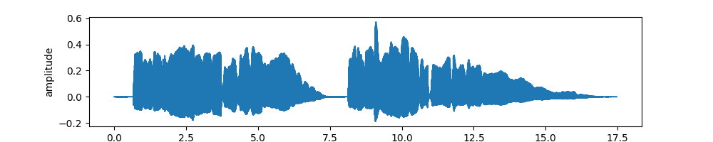
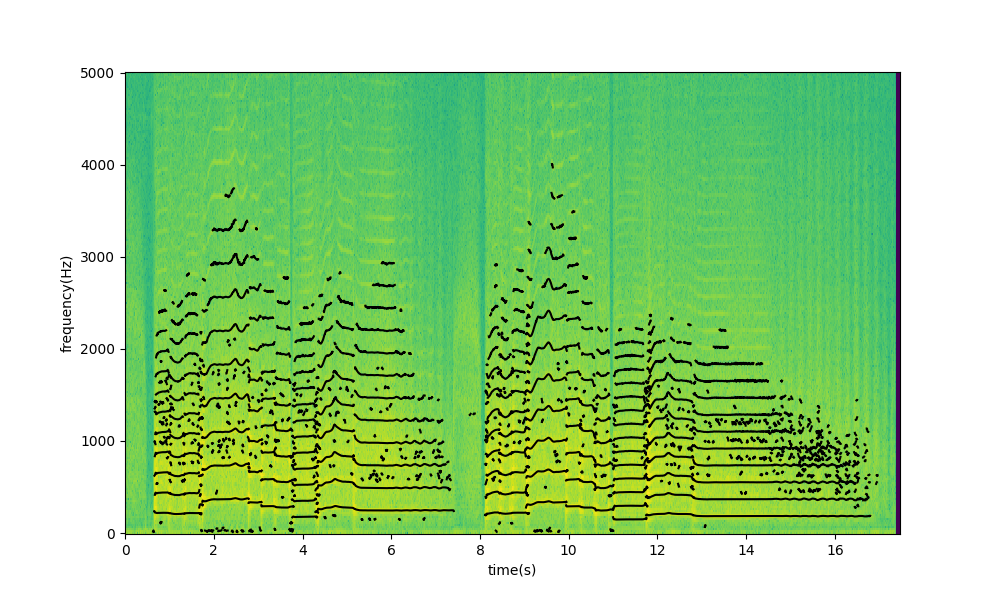

This keyboard allows you to play a virtual trombone.
Spectral Modeling Synthesis (SMS) is a technique for sound synthesis that represents audio as a combination of two components: a sinusoidal component capturing tonal or harmonic content and a residual component representing noise-like or non-harmonic elements. The sinusoidal component is modeled as an additive combination of multiple time-varying sinusoids with specific frequencies, amplitudes, and phases. This enables precise control over tonal characteristics, making it great for a task like imitating the sound and harmonics of trombone. The residual, typically modeled with spectral subtraction or stochastic noise, allows the synthesis of realistic non-tonal elements such as articulations, breaths, and air.
For the section below, the code I am using is available on GitHub: andrewzhang26/220a-final-project
To help demonstrate SMS, I will start with a sample recording of me playing a melody on trombone. This is a real-life recording of a real trombone.
We then perform a spectral analysis of the sample recording. As shown in the spectogram below, the SPR model indentifies the sinusoidal components (marked by the black lines and dots), capturing both the harmonics and the residual noise.
Then using the data from the spectral analysis, we are able to additively synthesize a trombone sound. First, here is just the harmonic component synthesized. You'll notice the sound is a lot more pure (or synthetic) than the sample recording, and lacks the sound of articulations, yet it still sounds quite like a trombone.
Now, here is just the residual component. It sounds quite bizarre. Focus in on how you can really hear the initial articulation of each note and the airy vibrato at the end.
Finally, here is the fully synthesized trombone sound, with both the harmonic and residual components. It's fully synthesized, but sounds just like the real thing.